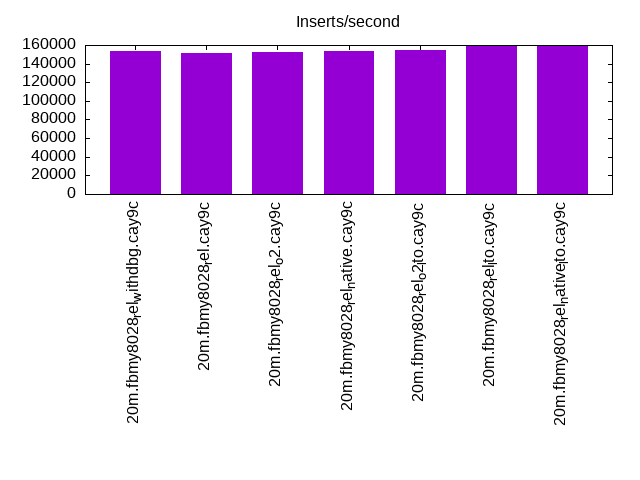
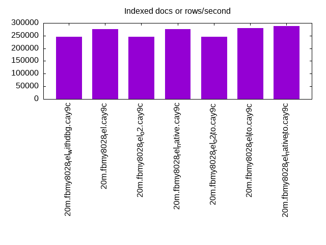
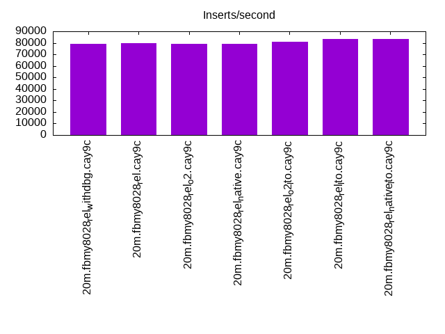
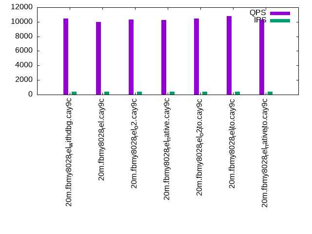
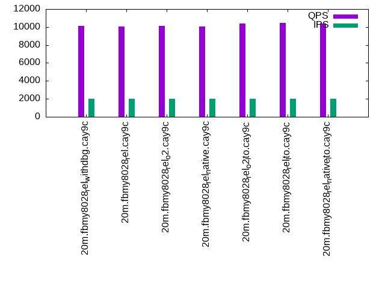
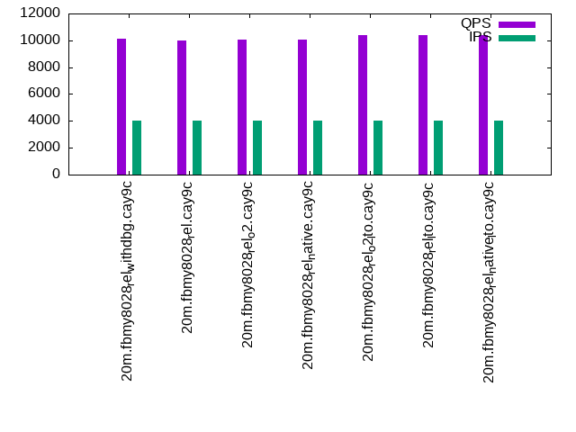

This is a report for the insert benchmark with 20M docs and 4 client(s). It is generated by scripts (bash, awk, sed) and Tufte might not be impressed. An overview of the insert benchmark is here and a short update is here. Below, by DBMS, I mean DBMS+version.config. An example is my8020.c10b40 where my means MySQL, 8020 is version 8.0.20 and c10b40 is the name for the configuration file.
The test server has 8 AMD cores, 16G RAM and an NVMe SSD. It is described here as the Beelink. The benchmark was run with 4 clients and there were 1 or 2 connections per client (1 for queries, 1 for inserts). The benchmark loads 20M rows without secondary indexes, creates secondary indexes, loads another 20M rows then does 3 read+write tests for one hour each that do queries as fast as possible with 100, 500 and then 1000 writes/second/client concurrent with the queries. There is one table per client. The database is cached by the storage engine and the only IO is for writes. Clients and the DBMS share one server. The per-database configs are in the per-database subdirectories here.
The tested DBMS are:
The numbers are inserts/s for l.i0 and l.i1, indexed docs (or rows) /s for l.x and queries/s for q*.2. The values are the average rate over the entire test for inserts (IPS) and queries (QPS). The range of values for IPS and QPS is split into 3 parts: bottom 25%, middle 50%, top 25%. Values in the bottom 25% have a red background, values in the top 25% have a green background and values in the middle have no color. A gray background is used for values that can be ignored because the DBMS did not sustain the target insert rate. Red backgrounds are not used when the minimum value is within 80% of the max value.
| dbms | l.i0 | l.x | l.i1 | q100.1 | q500.1 | q1000.1 |
|---|---|---|---|---|---|---|
| 20m.fbmy8028_rel_withdbg.cay9c | 153846 | 245122 | 79365 | 10453 | 10115 | 10130 |
| 20m.fbmy8028_rel.cay9c | 151515 | 275342 | 80000 | 9971 | 10068 | 9972 |
| 20m.fbmy8028_rel_o2.cay9c | 152672 | 245122 | 79365 | 10333 | 10131 | 10036 |
| 20m.fbmy8028_rel_native.cay9c | 153846 | 275342 | 79051 | 10231 | 10082 | 10028 |
| 20m.fbmy8028_rel_o2_lto.cay9c | 155039 | 245122 | 80645 | 10488 | 10416 | 10368 |
| 20m.fbmy8028_rel_lto.cay9c | 158730 | 279167 | 83333 | 10812 | 10437 | 10371 |
| 20m.fbmy8028_rel_native_lto.cay9c | 158730 | 287143 | 83333 | 10357 | 10405 | 10419 |
This table has relative throughput, throughput for the DBMS relative to the DBMS in the first line, using the absolute throughput from the previous table.
| dbms | l.i0 | l.x | l.i1 | q100.1 | q500.1 | q1000.1 |
|---|---|---|---|---|---|---|
| 20m.fbmy8028_rel_withdbg.cay9c | 1.00 | 1.00 | 1.00 | 1.00 | 1.00 | 1.00 |
| 20m.fbmy8028_rel.cay9c | 0.98 | 1.12 | 1.01 | 0.95 | 1.00 | 0.98 |
| 20m.fbmy8028_rel_o2.cay9c | 0.99 | 1.00 | 1.00 | 0.99 | 1.00 | 0.99 |
| 20m.fbmy8028_rel_native.cay9c | 1.00 | 1.12 | 1.00 | 0.98 | 1.00 | 0.99 |
| 20m.fbmy8028_rel_o2_lto.cay9c | 1.01 | 1.00 | 1.02 | 1.00 | 1.03 | 1.02 |
| 20m.fbmy8028_rel_lto.cay9c | 1.03 | 1.14 | 1.05 | 1.03 | 1.03 | 1.02 |
| 20m.fbmy8028_rel_native_lto.cay9c | 1.03 | 1.17 | 1.05 | 0.99 | 1.03 | 1.03 |
This lists the average rate of inserts/s for the tests that do inserts concurrent with queries. For such tests the query rate is listed in the table above. The read+write tests are setup so that the insert rate should match the target rate every second. Cells that are not at least 95% of the target have a red background to indicate a failure to satisfy the target.
| dbms | q100.1 | q500.1 | q1000.1 |
|---|---|---|---|
| fbmy8028_rel_withdbg.cay9c | 399 | 1993 | 3989 |
| fbmy8028_rel.cay9c | 399 | 1994 | 3989 |
| fbmy8028_rel_o2.cay9c | 399 | 1994 | 3989 |
| fbmy8028_rel_native.cay9c | 399 | 1994 | 3989 |
| fbmy8028_rel_o2_lto.cay9c | 399 | 1994 | 3989 |
| fbmy8028_rel_lto.cay9c | 399 | 1994 | 3989 |
| fbmy8028_rel_native_lto.cay9c | 399 | 1994 | 3989 |
| target | 400 | 2000 | 4000 |
l.i0: load without secondary indexes. Graphs for performance per 1-second interval are here.
Average throughput:
Insert response time histogram: each cell has the percentage of responses that take <= the time in the header and max is the max response time in seconds. For the max column values in the top 25% of the range have a red background and in the bottom 25% of the range have a green background. The red background is not used when the min value is within 80% of the max value.
| dbms | 256us | 1ms | 4ms | 16ms | 64ms | 256ms | 1s | 4s | 16s | gt | max |
|---|---|---|---|---|---|---|---|---|---|---|---|
| fbmy8028_rel_withdbg.cay9c | 99.265 | 0.525 | 0.197 | 0.013 | 0.134 | ||||||
| fbmy8028_rel.cay9c | 99.240 | 0.538 | 0.209 | 0.013 | 0.128 | ||||||
| fbmy8028_rel_o2.cay9c | 99.239 | 0.559 | 0.190 | 0.013 | 0.112 | ||||||
| fbmy8028_rel_native.cay9c | 99.249 | 0.548 | 0.190 | 0.013 | 0.126 | ||||||
| fbmy8028_rel_o2_lto.cay9c | 99.250 | 0.537 | 0.199 | 0.013 | 0.119 | ||||||
| fbmy8028_rel_lto.cay9c | 99.256 | 0.548 | 0.182 | 0.013 | 0.125 | ||||||
| fbmy8028_rel_native_lto.cay9c | 99.290 | 0.504 | 0.193 | 0.013 | 0.137 |
Performance metrics for the DBMS listed above. Some are normalized by throughput, others are not. Legend for results is here.
ips qps rps rmbps wps wmbps rpq rkbpq wpi wkbpi csps cpups cspq cpupq dbgb1 dbgb2 rss maxop p50 p99 tag 153846 0 0 0.0 107.7 42.6 0.000 0.000 0.001 0.284 15599 67.1 0.101 35 0.7 1.9 0.8 0.134 40856 34063 20m.fbmy8028_rel_withdbg.cay9c 151515 0 0 0.0 107.7 42.6 0.000 0.000 0.001 0.288 15716 66.8 0.104 35 0.7 1.9 0.7 0.128 41654 16692 20m.fbmy8028_rel.cay9c 152672 0 0 0.0 107.8 42.6 0.000 0.000 0.001 0.286 15586 67.1 0.102 35 0.7 1.9 0.8 0.112 41192 2798 20m.fbmy8028_rel_o2.cay9c 153846 0 0 0.0 107.8 42.6 0.000 0.000 0.001 0.284 15653 66.7 0.102 35 0.7 1.9 0.7 0.126 41551 14184 20m.fbmy8028_rel_native.cay9c 155039 0 0 0.0 111.0 44.0 0.000 0.000 0.001 0.291 15798 67.9 0.102 35 0.7 1.9 0.8 0.119 41255 24980 20m.fbmy8028_rel_o2_lto.cay9c 158730 0 0 0.0 111.6 44.3 0.000 0.000 0.001 0.286 15884 67.4 0.100 34 0.7 1.9 0.8 0.125 42454 18180 20m.fbmy8028_rel_lto.cay9c 158730 0 0 0.0 111.8 44.3 0.000 0.000 0.001 0.286 16041 67.2 0.101 34 0.7 1.9 0.7 0.137 42853 8890 20m.fbmy8028_rel_native_lto.cay9c
l.x: create secondary indexes.
Average throughput:
Performance metrics for the DBMS listed above. Some are normalized by throughput, others are not. Legend for results is here.
ips qps rps rmbps wps wmbps rpq rkbpq wpi wkbpi csps cpups cspq cpupq dbgb1 dbgb2 rss maxop p50 p99 tag 245122 0 1 0.0 98.0 40.6 0.000 0.000 0.000 0.170 671 48.2 0.003 16 1.4 2.7 2.2 0.014 NA NA 20m.fbmy8028_rel_withdbg.cay9c 275342 0 0 0.0 105.3 44.7 0.000 0.000 0.000 0.166 650 47.9 0.002 14 1.4 2.7 2.2 0.014 NA NA 20m.fbmy8028_rel.cay9c 245122 0 1 0.0 97.5 40.7 0.000 0.000 0.000 0.170 702 48.0 0.003 16 1.4 2.7 2.3 0.014 NA NA 20m.fbmy8028_rel_o2.cay9c 275342 0 1 0.0 104.2 44.6 0.000 0.000 0.000 0.166 690 48.1 0.003 14 1.4 2.7 2.2 0.016 NA NA 20m.fbmy8028_rel_native.cay9c 245122 0 1 0.0 98.2 41.0 0.000 0.000 0.000 0.171 688 48.4 0.003 16 1.4 2.7 2.2 0.017 NA NA 20m.fbmy8028_rel_o2_lto.cay9c 279167 0 1 0.0 112.7 47.0 0.000 0.000 0.000 0.172 760 47.7 0.003 14 1.4 2.7 2.2 0.010 NA NA 20m.fbmy8028_rel_lto.cay9c 287143 0 1 0.0 116.8 47.5 0.000 0.000 0.000 0.170 797 46.8 0.003 13 1.4 2.7 2.2 0.010 NA NA 20m.fbmy8028_rel_native_lto.cay9c
l.i1: continue load after secondary indexes created. Graphs for performance per 1-second interval are here.
Average throughput:
Insert response time histogram: each cell has the percentage of responses that take <= the time in the header and max is the max response time in seconds. For the max column values in the top 25% of the range have a red background and in the bottom 25% of the range have a green background. The red background is not used when the min value is within 80% of the max value.
| dbms | 256us | 1ms | 4ms | 16ms | 64ms | 256ms | 1s | 4s | 16s | gt | max |
|---|---|---|---|---|---|---|---|---|---|---|---|
| fbmy8028_rel_withdbg.cay9c | 99.138 | 0.744 | 0.113 | 0.005 | 0.102 | ||||||
| fbmy8028_rel.cay9c | 99.166 | 0.720 | 0.108 | 0.005 | 0.124 | ||||||
| fbmy8028_rel_o2.cay9c | 99.144 | 0.749 | 0.102 | 0.004 | 0.133 | ||||||
| fbmy8028_rel_native.cay9c | 99.163 | 0.715 | 0.116 | 0.006 | 0.118 | ||||||
| fbmy8028_rel_o2_lto.cay9c | 99.183 | 0.695 | 0.116 | 0.006 | 0.119 | ||||||
| fbmy8028_rel_lto.cay9c | 99.260 | 0.628 | 0.105 | 0.007 | 0.121 | ||||||
| fbmy8028_rel_native_lto.cay9c | 99.208 | 0.684 | 0.100 | 0.007 | 0.117 |
Performance metrics for the DBMS listed above. Some are normalized by throughput, others are not. Legend for results is here.
ips qps rps rmbps wps wmbps rpq rkbpq wpi wkbpi csps cpups cspq cpupq dbgb1 dbgb2 rss maxop p50 p99 tag 79365 0 17 2.1 155.3 61.5 0.000 0.027 0.002 0.793 17132 74.7 0.216 75 4.9 6.8 2.7 0.102 20328 14285 20m.fbmy8028_rel_withdbg.cay9c 80000 0 16 1.9 160.0 63.1 0.000 0.025 0.002 0.808 17337 74.7 0.217 75 3.8 5.8 2.7 0.124 20678 15644 20m.fbmy8028_rel.cay9c 79365 0 15 1.8 156.9 62.0 0.000 0.024 0.002 0.800 17224 74.5 0.217 75 3.6 5.5 2.7 0.133 20278 15888 20m.fbmy8028_rel_o2.cay9c 79051 0 6 0.7 159.1 63.4 0.000 0.009 0.002 0.821 17299 73.9 0.219 75 4.2 6.1 2.8 0.118 20378 15533 20m.fbmy8028_rel_native.cay9c 80645 0 11 1.3 157.8 62.3 0.000 0.017 0.002 0.791 17393 75.2 0.216 75 3.8 5.7 2.7 0.119 20835 16083 20m.fbmy8028_rel_o2_lto.cay9c 83333 0 16 2.0 162.5 64.4 0.000 0.025 0.002 0.792 17743 74.5 0.213 72 3.4 5.3 2.8 0.121 21277 15788 20m.fbmy8028_rel_lto.cay9c 83333 0 18 2.2 165.0 65.8 0.000 0.027 0.002 0.809 17825 74.4 0.214 71 3.6 5.5 2.7 0.117 21184 15683 20m.fbmy8028_rel_native_lto.cay9c
q100.1: range queries with 100 insert/s per client. Graphs for performance per 1-second interval are here.
Average throughput:
Query response time histogram: each cell has the percentage of responses that take <= the time in the header and max is the max response time in seconds. For max values in the top 25% of the range have a red background and in the bottom 25% of the range have a green background. The red background is not used when the min value is within 80% of the max value.
| dbms | 256us | 1ms | 4ms | 16ms | 64ms | 256ms | 1s | 4s | 16s | gt | max |
|---|---|---|---|---|---|---|---|---|---|---|---|
| fbmy8028_rel_withdbg.cay9c | 6.764 | 93.226 | 0.010 | 0.001 | nonzero | 0.022 | |||||
| fbmy8028_rel.cay9c | 3.645 | 96.340 | 0.014 | 0.001 | 0.009 | ||||||
| fbmy8028_rel_o2.cay9c | 6.056 | 93.934 | 0.010 | nonzero | 0.008 | ||||||
| fbmy8028_rel_native.cay9c | 6.272 | 93.714 | 0.013 | 0.001 | 0.013 | ||||||
| fbmy8028_rel_o2_lto.cay9c | 8.826 | 91.162 | 0.011 | 0.001 | 0.011 | ||||||
| fbmy8028_rel_lto.cay9c | 13.075 | 86.915 | 0.010 | nonzero | nonzero | 0.023 | |||||
| fbmy8028_rel_native_lto.cay9c | 8.859 | 91.130 | 0.010 | 0.001 | 0.013 |
Insert response time histogram: each cell has the percentage of responses that take <= the time in the header and max is the max response time in seconds. For max values in the top 25% of the range have a red background and in the bottom 25% of the range have a green background. The red background is not used when the min value is within 80% of the max value.
| dbms | 256us | 1ms | 4ms | 16ms | 64ms | 256ms | 1s | 4s | 16s | gt | max |
|---|---|---|---|---|---|---|---|---|---|---|---|
| fbmy8028_rel_withdbg.cay9c | 99.618 | 0.361 | 0.021 | 0.017 | |||||||
| fbmy8028_rel.cay9c | 99.493 | 0.458 | 0.049 | 0.018 | |||||||
| fbmy8028_rel_o2.cay9c | 99.646 | 0.312 | 0.042 | 0.023 | |||||||
| fbmy8028_rel_native.cay9c | 99.389 | 0.562 | 0.049 | 0.018 | |||||||
| fbmy8028_rel_o2_lto.cay9c | 99.611 | 0.340 | 0.049 | 0.018 | |||||||
| fbmy8028_rel_lto.cay9c | 99.521 | 0.431 | 0.049 | 0.017 | |||||||
| fbmy8028_rel_native_lto.cay9c | 99.729 | 0.236 | 0.035 | 0.017 |
Performance metrics for the DBMS listed above. Some are normalized by throughput, others are not. Legend for results is here.
ips qps rps rmbps wps wmbps rpq rkbpq wpi wkbpi csps cpups cspq cpupq dbgb1 dbgb2 rss maxop p50 p99 tag 399 10453 4 0.1 6.6 1.5 0.000 0.012 0.017 3.927 39480 51.2 3.777 392 2.8 4.9 6.1 0.022 2654 2142 20m.fbmy8028_rel_withdbg.cay9c 399 9971 14 0.2 6.7 1.6 0.001 0.016 0.017 4.062 37841 51.1 3.795 410 2.9 4.9 6.5 0.009 2557 2030 20m.fbmy8028_rel.cay9c 399 10333 9 0.1 7.0 1.7 0.001 0.015 0.018 4.425 39087 51.2 3.783 396 2.8 4.9 6.2 0.008 2637 2142 20m.fbmy8028_rel_o2.cay9c 399 10231 37 0.3 7.3 1.9 0.004 0.032 0.018 4.812 38798 51.3 3.792 401 2.8 4.9 7.0 0.013 2589 1967 20m.fbmy8028_rel_native.cay9c 399 10488 17 0.2 6.8 1.7 0.002 0.023 0.017 4.311 39650 51.2 3.780 391 2.8 4.9 6.4 0.011 2622 2046 20m.fbmy8028_rel_o2_lto.cay9c 399 10812 4 0.1 6.8 1.7 0.000 0.013 0.017 4.248 40849 51.2 3.778 379 2.8 4.9 6.0 0.023 2718 2237 20m.fbmy8028_rel_lto.cay9c 399 10357 9 0.1 6.6 1.5 0.001 0.012 0.016 3.886 39224 51.1 3.787 395 2.8 4.9 6.4 0.013 2589 2046 20m.fbmy8028_rel_native_lto.cay9c
q500.1: range queries with 500 insert/s per client. Graphs for performance per 1-second interval are here.
Average throughput:
Query response time histogram: each cell has the percentage of responses that take <= the time in the header and max is the max response time in seconds. For max values in the top 25% of the range have a red background and in the bottom 25% of the range have a green background. The red background is not used when the min value is within 80% of the max value.
| dbms | 256us | 1ms | 4ms | 16ms | 64ms | 256ms | 1s | 4s | 16s | gt | max |
|---|---|---|---|---|---|---|---|---|---|---|---|
| fbmy8028_rel_withdbg.cay9c | 2.755 | 97.195 | 0.047 | 0.003 | nonzero | 0.020 | |||||
| fbmy8028_rel.cay9c | 3.032 | 96.908 | 0.056 | 0.004 | nonzero | 0.016 | |||||
| fbmy8028_rel_o2.cay9c | 2.057 | 97.890 | 0.050 | 0.003 | 0.016 | ||||||
| fbmy8028_rel_native.cay9c | 2.893 | 97.046 | 0.057 | 0.003 | nonzero | 0.017 | |||||
| fbmy8028_rel_o2_lto.cay9c | 7.370 | 92.578 | 0.048 | 0.004 | nonzero | 0.020 | |||||
| fbmy8028_rel_lto.cay9c | 7.737 | 92.217 | 0.044 | 0.003 | nonzero | 0.019 | |||||
| fbmy8028_rel_native_lto.cay9c | 8.196 | 91.752 | 0.048 | 0.003 | nonzero | 0.018 |
Insert response time histogram: each cell has the percentage of responses that take <= the time in the header and max is the max response time in seconds. For max values in the top 25% of the range have a red background and in the bottom 25% of the range have a green background. The red background is not used when the min value is within 80% of the max value.
| dbms | 256us | 1ms | 4ms | 16ms | 64ms | 256ms | 1s | 4s | 16s | gt | max |
|---|---|---|---|---|---|---|---|---|---|---|---|
| fbmy8028_rel_withdbg.cay9c | 95.058 | 4.833 | 0.108 | 0.062 | |||||||
| fbmy8028_rel.cay9c | 92.042 | 7.792 | 0.167 | 0.063 | |||||||
| fbmy8028_rel_o2.cay9c | 96.240 | 3.668 | 0.090 | 0.001 | 0.066 | ||||||
| fbmy8028_rel_native.cay9c | 95.953 | 3.947 | 0.099 | 0.001 | 0.066 | ||||||
| fbmy8028_rel_o2_lto.cay9c | 92.607 | 7.232 | 0.161 | 0.048 | |||||||
| fbmy8028_rel_lto.cay9c | 96.508 | 3.389 | 0.103 | 0.062 | |||||||
| fbmy8028_rel_native_lto.cay9c | 95.885 | 3.993 | 0.121 | 0.001 | 0.065 |
Performance metrics for the DBMS listed above. Some are normalized by throughput, others are not. Legend for results is here.
ips qps rps rmbps wps wmbps rpq rkbpq wpi wkbpi csps cpups cspq cpupq dbgb1 dbgb2 rss maxop p50 p99 tag 1993 10115 0 0.0 7.3 1.9 0.000 0.000 0.004 0.972 38110 51.9 3.768 410 3.2 3.7 8.2 0.020 2558 2094 20m.fbmy8028_rel_withdbg.cay9c 1994 10068 0 0.0 7.7 2.1 0.000 0.000 0.004 1.063 37931 51.9 3.768 412 3.1 3.6 8.5 0.016 2509 2062 20m.fbmy8028_rel.cay9c 1994 10131 0 0.0 7.1 1.8 0.000 0.000 0.004 0.919 38134 51.9 3.764 410 3.2 3.7 8.3 0.016 2573 2094 20m.fbmy8028_rel_o2.cay9c 1994 10082 0 0.0 7.1 1.7 0.000 0.000 0.004 0.880 38122 51.6 3.781 409 3.2 3.7 8.4 0.017 2525 2047 20m.fbmy8028_rel_native.cay9c 1994 10416 0 0.0 8.0 2.1 0.000 0.000 0.004 1.104 39090 52.1 3.753 400 3.1 3.6 9.4 0.020 2589 2110 20m.fbmy8028_rel_o2_lto.cay9c 1994 10437 0 0.0 7.2 1.8 0.000 0.000 0.004 0.938 39316 51.8 3.767 397 3.2 3.7 8.1 0.019 2637 2190 20m.fbmy8028_rel_lto.cay9c 1994 10405 0 0.0 8.1 2.2 0.000 0.000 0.004 1.141 39172 51.9 3.765 399 3.1 3.6 8.7 0.018 2589 2127 20m.fbmy8028_rel_native_lto.cay9c
q1000.1: range queries with 1000 insert/s per client. Graphs for performance per 1-second interval are here.
Average throughput:
Query response time histogram: each cell has the percentage of responses that take <= the time in the header and max is the max response time in seconds. For max values in the top 25% of the range have a red background and in the bottom 25% of the range have a green background. The red background is not used when the min value is within 80% of the max value.
| dbms | 256us | 1ms | 4ms | 16ms | 64ms | 256ms | 1s | 4s | 16s | gt | max |
|---|---|---|---|---|---|---|---|---|---|---|---|
| fbmy8028_rel_withdbg.cay9c | 2.426 | 97.429 | 0.131 | 0.013 | nonzero | 0.024 | |||||
| fbmy8028_rel.cay9c | 1.778 | 98.056 | 0.152 | 0.014 | nonzero | 0.020 | |||||
| fbmy8028_rel_o2.cay9c | 2.034 | 97.805 | 0.147 | 0.014 | nonzero | 0.025 | |||||
| fbmy8028_rel_native.cay9c | 2.658 | 97.171 | 0.156 | 0.015 | nonzero | 0.026 | |||||
| fbmy8028_rel_o2_lto.cay9c | 5.165 | 94.711 | 0.116 | 0.009 | nonzero | 0.026 | |||||
| fbmy8028_rel_lto.cay9c | 6.245 | 93.618 | 0.125 | 0.012 | nonzero | 0.024 | |||||
| fbmy8028_rel_native_lto.cay9c | 6.996 | 92.868 | 0.125 | 0.010 | nonzero | 0.022 |
Insert response time histogram: each cell has the percentage of responses that take <= the time in the header and max is the max response time in seconds. For max values in the top 25% of the range have a red background and in the bottom 25% of the range have a green background. The red background is not used when the min value is within 80% of the max value.
| dbms | 256us | 1ms | 4ms | 16ms | 64ms | 256ms | 1s | 4s | 16s | gt | max |
|---|---|---|---|---|---|---|---|---|---|---|---|
| fbmy8028_rel_withdbg.cay9c | 84.029 | 15.770 | 0.201 | 0.059 | |||||||
| fbmy8028_rel.cay9c | 84.764 | 15.040 | 0.195 | 0.001 | 0.068 | ||||||
| fbmy8028_rel_o2.cay9c | 85.478 | 14.340 | 0.182 | 0.056 | |||||||
| fbmy8028_rel_native.cay9c | 92.763 | 7.125 | 0.112 | 0.063 | |||||||
| fbmy8028_rel_o2_lto.cay9c | 93.538 | 6.324 | 0.137 | 0.001 | 0.074 | ||||||
| fbmy8028_rel_lto.cay9c | 90.719 | 9.133 | 0.147 | 0.001 | 0.070 | ||||||
| fbmy8028_rel_native_lto.cay9c | 93.031 | 6.841 | 0.127 | 0.001 | 0.076 |
Performance metrics for the DBMS listed above. Some are normalized by throughput, others are not. Legend for results is here.
ips qps rps rmbps wps wmbps rpq rkbpq wpi wkbpi csps cpups cspq cpupq dbgb1 dbgb2 rss maxop p50 p99 tag 3989 10130 10 0.5 15.7 4.8 0.001 0.052 0.004 1.221 37426 53.9 3.695 426 3.7 5.1 10.8 0.024 2541 2062 20m.fbmy8028_rel_withdbg.cay9c 3989 9972 5 0.5 15.3 4.7 0.001 0.051 0.004 1.201 37004 53.8 3.711 432 3.7 5.1 10.7 0.020 2493 2046 20m.fbmy8028_rel.cay9c 3989 10036 9 0.5 16.1 4.9 0.001 0.051 0.004 1.260 37165 53.9 3.703 430 3.7 5.1 10.9 0.025 2525 2078 20m.fbmy8028_rel_o2.cay9c 3989 10028 20 0.8 16.5 5.2 0.002 0.085 0.004 1.325 37246 54.1 3.714 432 3.7 5.1 10.4 0.026 2493 2047 20m.fbmy8028_rel_native.cay9c 3989 10368 17 0.6 14.8 4.4 0.002 0.064 0.004 1.130 38473 53.7 3.711 414 3.9 5.3 10.8 0.026 2590 2142 20m.fbmy8028_rel_o2_lto.cay9c 3989 10371 9 0.6 15.6 4.8 0.001 0.055 0.004 1.225 38413 53.8 3.704 415 3.7 5.1 10.8 0.024 2605 2174 20m.fbmy8028_rel_lto.cay9c 3989 10419 17 0.7 14.4 4.3 0.002 0.069 0.004 1.112 38725 53.6 3.717 412 4.0 5.4 10.7 0.022 2590 2141 20m.fbmy8028_rel_native_lto.cay9c
l.i0: load without secondary indexes
Performance metrics for all DBMS, not just the ones listed above. Some are normalized by throughput, others are not. Legend for results is here.
ips qps rps rmbps wps wmbps rpq rkbpq wpi wkbpi csps cpups cspq cpupq dbgb1 dbgb2 rss maxop p50 p99 tag 153846 0 0 0.0 107.7 42.6 0.000 0.000 0.001 0.284 15599 67.1 0.101 35 0.7 1.9 0.8 0.134 40856 34063 20m.fbmy8028_rel_withdbg.cay9c 151515 0 0 0.0 107.7 42.6 0.000 0.000 0.001 0.288 15716 66.8 0.104 35 0.7 1.9 0.7 0.128 41654 16692 20m.fbmy8028_rel.cay9c 152672 0 0 0.0 107.8 42.6 0.000 0.000 0.001 0.286 15586 67.1 0.102 35 0.7 1.9 0.8 0.112 41192 2798 20m.fbmy8028_rel_o2.cay9c 153846 0 0 0.0 107.8 42.6 0.000 0.000 0.001 0.284 15653 66.7 0.102 35 0.7 1.9 0.7 0.126 41551 14184 20m.fbmy8028_rel_native.cay9c 155039 0 0 0.0 111.0 44.0 0.000 0.000 0.001 0.291 15798 67.9 0.102 35 0.7 1.9 0.8 0.119 41255 24980 20m.fbmy8028_rel_o2_lto.cay9c 158730 0 0 0.0 111.6 44.3 0.000 0.000 0.001 0.286 15884 67.4 0.100 34 0.7 1.9 0.8 0.125 42454 18180 20m.fbmy8028_rel_lto.cay9c 158730 0 0 0.0 111.8 44.3 0.000 0.000 0.001 0.286 16041 67.2 0.101 34 0.7 1.9 0.7 0.137 42853 8890 20m.fbmy8028_rel_native_lto.cay9c
l.x: create secondary indexes
Performance metrics for all DBMS, not just the ones listed above. Some are normalized by throughput, others are not. Legend for results is here.
ips qps rps rmbps wps wmbps rpq rkbpq wpi wkbpi csps cpups cspq cpupq dbgb1 dbgb2 rss maxop p50 p99 tag 245122 0 1 0.0 98.0 40.6 0.000 0.000 0.000 0.170 671 48.2 0.003 16 1.4 2.7 2.2 0.014 NA NA 20m.fbmy8028_rel_withdbg.cay9c 275342 0 0 0.0 105.3 44.7 0.000 0.000 0.000 0.166 650 47.9 0.002 14 1.4 2.7 2.2 0.014 NA NA 20m.fbmy8028_rel.cay9c 245122 0 1 0.0 97.5 40.7 0.000 0.000 0.000 0.170 702 48.0 0.003 16 1.4 2.7 2.3 0.014 NA NA 20m.fbmy8028_rel_o2.cay9c 275342 0 1 0.0 104.2 44.6 0.000 0.000 0.000 0.166 690 48.1 0.003 14 1.4 2.7 2.2 0.016 NA NA 20m.fbmy8028_rel_native.cay9c 245122 0 1 0.0 98.2 41.0 0.000 0.000 0.000 0.171 688 48.4 0.003 16 1.4 2.7 2.2 0.017 NA NA 20m.fbmy8028_rel_o2_lto.cay9c 279167 0 1 0.0 112.7 47.0 0.000 0.000 0.000 0.172 760 47.7 0.003 14 1.4 2.7 2.2 0.010 NA NA 20m.fbmy8028_rel_lto.cay9c 287143 0 1 0.0 116.8 47.5 0.000 0.000 0.000 0.170 797 46.8 0.003 13 1.4 2.7 2.2 0.010 NA NA 20m.fbmy8028_rel_native_lto.cay9c
l.i1: continue load after secondary indexes created
Performance metrics for all DBMS, not just the ones listed above. Some are normalized by throughput, others are not. Legend for results is here.
ips qps rps rmbps wps wmbps rpq rkbpq wpi wkbpi csps cpups cspq cpupq dbgb1 dbgb2 rss maxop p50 p99 tag 79365 0 17 2.1 155.3 61.5 0.000 0.027 0.002 0.793 17132 74.7 0.216 75 4.9 6.8 2.7 0.102 20328 14285 20m.fbmy8028_rel_withdbg.cay9c 80000 0 16 1.9 160.0 63.1 0.000 0.025 0.002 0.808 17337 74.7 0.217 75 3.8 5.8 2.7 0.124 20678 15644 20m.fbmy8028_rel.cay9c 79365 0 15 1.8 156.9 62.0 0.000 0.024 0.002 0.800 17224 74.5 0.217 75 3.6 5.5 2.7 0.133 20278 15888 20m.fbmy8028_rel_o2.cay9c 79051 0 6 0.7 159.1 63.4 0.000 0.009 0.002 0.821 17299 73.9 0.219 75 4.2 6.1 2.8 0.118 20378 15533 20m.fbmy8028_rel_native.cay9c 80645 0 11 1.3 157.8 62.3 0.000 0.017 0.002 0.791 17393 75.2 0.216 75 3.8 5.7 2.7 0.119 20835 16083 20m.fbmy8028_rel_o2_lto.cay9c 83333 0 16 2.0 162.5 64.4 0.000 0.025 0.002 0.792 17743 74.5 0.213 72 3.4 5.3 2.8 0.121 21277 15788 20m.fbmy8028_rel_lto.cay9c 83333 0 18 2.2 165.0 65.8 0.000 0.027 0.002 0.809 17825 74.4 0.214 71 3.6 5.5 2.7 0.117 21184 15683 20m.fbmy8028_rel_native_lto.cay9c
q100.1: range queries with 100 insert/s per client
Performance metrics for all DBMS, not just the ones listed above. Some are normalized by throughput, others are not. Legend for results is here.
ips qps rps rmbps wps wmbps rpq rkbpq wpi wkbpi csps cpups cspq cpupq dbgb1 dbgb2 rss maxop p50 p99 tag 399 10453 4 0.1 6.6 1.5 0.000 0.012 0.017 3.927 39480 51.2 3.777 392 2.8 4.9 6.1 0.022 2654 2142 20m.fbmy8028_rel_withdbg.cay9c 399 9971 14 0.2 6.7 1.6 0.001 0.016 0.017 4.062 37841 51.1 3.795 410 2.9 4.9 6.5 0.009 2557 2030 20m.fbmy8028_rel.cay9c 399 10333 9 0.1 7.0 1.7 0.001 0.015 0.018 4.425 39087 51.2 3.783 396 2.8 4.9 6.2 0.008 2637 2142 20m.fbmy8028_rel_o2.cay9c 399 10231 37 0.3 7.3 1.9 0.004 0.032 0.018 4.812 38798 51.3 3.792 401 2.8 4.9 7.0 0.013 2589 1967 20m.fbmy8028_rel_native.cay9c 399 10488 17 0.2 6.8 1.7 0.002 0.023 0.017 4.311 39650 51.2 3.780 391 2.8 4.9 6.4 0.011 2622 2046 20m.fbmy8028_rel_o2_lto.cay9c 399 10812 4 0.1 6.8 1.7 0.000 0.013 0.017 4.248 40849 51.2 3.778 379 2.8 4.9 6.0 0.023 2718 2237 20m.fbmy8028_rel_lto.cay9c 399 10357 9 0.1 6.6 1.5 0.001 0.012 0.016 3.886 39224 51.1 3.787 395 2.8 4.9 6.4 0.013 2589 2046 20m.fbmy8028_rel_native_lto.cay9c
q500.1: range queries with 500 insert/s per client
Performance metrics for all DBMS, not just the ones listed above. Some are normalized by throughput, others are not. Legend for results is here.
ips qps rps rmbps wps wmbps rpq rkbpq wpi wkbpi csps cpups cspq cpupq dbgb1 dbgb2 rss maxop p50 p99 tag 1993 10115 0 0.0 7.3 1.9 0.000 0.000 0.004 0.972 38110 51.9 3.768 410 3.2 3.7 8.2 0.020 2558 2094 20m.fbmy8028_rel_withdbg.cay9c 1994 10068 0 0.0 7.7 2.1 0.000 0.000 0.004 1.063 37931 51.9 3.768 412 3.1 3.6 8.5 0.016 2509 2062 20m.fbmy8028_rel.cay9c 1994 10131 0 0.0 7.1 1.8 0.000 0.000 0.004 0.919 38134 51.9 3.764 410 3.2 3.7 8.3 0.016 2573 2094 20m.fbmy8028_rel_o2.cay9c 1994 10082 0 0.0 7.1 1.7 0.000 0.000 0.004 0.880 38122 51.6 3.781 409 3.2 3.7 8.4 0.017 2525 2047 20m.fbmy8028_rel_native.cay9c 1994 10416 0 0.0 8.0 2.1 0.000 0.000 0.004 1.104 39090 52.1 3.753 400 3.1 3.6 9.4 0.020 2589 2110 20m.fbmy8028_rel_o2_lto.cay9c 1994 10437 0 0.0 7.2 1.8 0.000 0.000 0.004 0.938 39316 51.8 3.767 397 3.2 3.7 8.1 0.019 2637 2190 20m.fbmy8028_rel_lto.cay9c 1994 10405 0 0.0 8.1 2.2 0.000 0.000 0.004 1.141 39172 51.9 3.765 399 3.1 3.6 8.7 0.018 2589 2127 20m.fbmy8028_rel_native_lto.cay9c
q1000.1: range queries with 1000 insert/s per client
Performance metrics for all DBMS, not just the ones listed above. Some are normalized by throughput, others are not. Legend for results is here.
ips qps rps rmbps wps wmbps rpq rkbpq wpi wkbpi csps cpups cspq cpupq dbgb1 dbgb2 rss maxop p50 p99 tag 3989 10130 10 0.5 15.7 4.8 0.001 0.052 0.004 1.221 37426 53.9 3.695 426 3.7 5.1 10.8 0.024 2541 2062 20m.fbmy8028_rel_withdbg.cay9c 3989 9972 5 0.5 15.3 4.7 0.001 0.051 0.004 1.201 37004 53.8 3.711 432 3.7 5.1 10.7 0.020 2493 2046 20m.fbmy8028_rel.cay9c 3989 10036 9 0.5 16.1 4.9 0.001 0.051 0.004 1.260 37165 53.9 3.703 430 3.7 5.1 10.9 0.025 2525 2078 20m.fbmy8028_rel_o2.cay9c 3989 10028 20 0.8 16.5 5.2 0.002 0.085 0.004 1.325 37246 54.1 3.714 432 3.7 5.1 10.4 0.026 2493 2047 20m.fbmy8028_rel_native.cay9c 3989 10368 17 0.6 14.8 4.4 0.002 0.064 0.004 1.130 38473 53.7 3.711 414 3.9 5.3 10.8 0.026 2590 2142 20m.fbmy8028_rel_o2_lto.cay9c 3989 10371 9 0.6 15.6 4.8 0.001 0.055 0.004 1.225 38413 53.8 3.704 415 3.7 5.1 10.8 0.024 2605 2174 20m.fbmy8028_rel_lto.cay9c 3989 10419 17 0.7 14.4 4.3 0.002 0.069 0.004 1.112 38725 53.6 3.717 412 4.0 5.4 10.7 0.022 2590 2141 20m.fbmy8028_rel_native_lto.cay9c
Insert response time histogram
256us 1ms 4ms 16ms 64ms 256ms 1s 4s 16s gt max tag 0.000 0.000 99.265 0.525 0.197 0.013 0.000 0.000 0.000 0.000 0.134 fbmy8028_rel_withdbg.cay9c 0.000 0.000 99.240 0.538 0.209 0.013 0.000 0.000 0.000 0.000 0.128 fbmy8028_rel.cay9c 0.000 0.000 99.239 0.559 0.190 0.013 0.000 0.000 0.000 0.000 0.112 fbmy8028_rel_o2.cay9c 0.000 0.000 99.249 0.548 0.190 0.013 0.000 0.000 0.000 0.000 0.126 fbmy8028_rel_native.cay9c 0.000 0.000 99.250 0.537 0.199 0.013 0.000 0.000 0.000 0.000 0.119 fbmy8028_rel_o2_lto.cay9c 0.000 0.000 99.256 0.548 0.182 0.013 0.000 0.000 0.000 0.000 0.125 fbmy8028_rel_lto.cay9c 0.000 0.000 99.290 0.504 0.193 0.013 0.000 0.000 0.000 0.000 0.137 fbmy8028_rel_native_lto.cay9c
TODO - determine whether there is data for create index response time
Insert response time histogram
256us 1ms 4ms 16ms 64ms 256ms 1s 4s 16s gt max tag 0.000 0.000 99.138 0.744 0.113 0.005 0.000 0.000 0.000 0.000 0.102 fbmy8028_rel_withdbg.cay9c 0.000 0.000 99.166 0.720 0.108 0.005 0.000 0.000 0.000 0.000 0.124 fbmy8028_rel.cay9c 0.000 0.000 99.144 0.749 0.102 0.004 0.000 0.000 0.000 0.000 0.133 fbmy8028_rel_o2.cay9c 0.000 0.000 99.163 0.715 0.116 0.006 0.000 0.000 0.000 0.000 0.118 fbmy8028_rel_native.cay9c 0.000 0.000 99.183 0.695 0.116 0.006 0.000 0.000 0.000 0.000 0.119 fbmy8028_rel_o2_lto.cay9c 0.000 0.000 99.260 0.628 0.105 0.007 0.000 0.000 0.000 0.000 0.121 fbmy8028_rel_lto.cay9c 0.000 0.000 99.208 0.684 0.100 0.007 0.000 0.000 0.000 0.000 0.117 fbmy8028_rel_native_lto.cay9c
Query response time histogram
256us 1ms 4ms 16ms 64ms 256ms 1s 4s 16s gt max tag 6.764 93.226 0.010 0.001 nonzero 0.000 0.000 0.000 0.000 0.000 0.022 fbmy8028_rel_withdbg.cay9c 3.645 96.340 0.014 0.001 0.000 0.000 0.000 0.000 0.000 0.000 0.009 fbmy8028_rel.cay9c 6.056 93.934 0.010 nonzero 0.000 0.000 0.000 0.000 0.000 0.000 0.008 fbmy8028_rel_o2.cay9c 6.272 93.714 0.013 0.001 0.000 0.000 0.000 0.000 0.000 0.000 0.013 fbmy8028_rel_native.cay9c 8.826 91.162 0.011 0.001 0.000 0.000 0.000 0.000 0.000 0.000 0.011 fbmy8028_rel_o2_lto.cay9c 13.075 86.915 0.010 nonzero nonzero 0.000 0.000 0.000 0.000 0.000 0.023 fbmy8028_rel_lto.cay9c 8.859 91.130 0.010 0.001 0.000 0.000 0.000 0.000 0.000 0.000 0.013 fbmy8028_rel_native_lto.cay9c
Insert response time histogram
256us 1ms 4ms 16ms 64ms 256ms 1s 4s 16s gt max tag 0.000 0.000 99.618 0.361 0.021 0.000 0.000 0.000 0.000 0.000 0.017 fbmy8028_rel_withdbg.cay9c 0.000 0.000 99.493 0.458 0.049 0.000 0.000 0.000 0.000 0.000 0.018 fbmy8028_rel.cay9c 0.000 0.000 99.646 0.312 0.042 0.000 0.000 0.000 0.000 0.000 0.023 fbmy8028_rel_o2.cay9c 0.000 0.000 99.389 0.562 0.049 0.000 0.000 0.000 0.000 0.000 0.018 fbmy8028_rel_native.cay9c 0.000 0.000 99.611 0.340 0.049 0.000 0.000 0.000 0.000 0.000 0.018 fbmy8028_rel_o2_lto.cay9c 0.000 0.000 99.521 0.431 0.049 0.000 0.000 0.000 0.000 0.000 0.017 fbmy8028_rel_lto.cay9c 0.000 0.000 99.729 0.236 0.035 0.000 0.000 0.000 0.000 0.000 0.017 fbmy8028_rel_native_lto.cay9c
Query response time histogram
256us 1ms 4ms 16ms 64ms 256ms 1s 4s 16s gt max tag 2.755 97.195 0.047 0.003 nonzero 0.000 0.000 0.000 0.000 0.000 0.020 fbmy8028_rel_withdbg.cay9c 3.032 96.908 0.056 0.004 nonzero 0.000 0.000 0.000 0.000 0.000 0.016 fbmy8028_rel.cay9c 2.057 97.890 0.050 0.003 0.000 0.000 0.000 0.000 0.000 0.000 0.016 fbmy8028_rel_o2.cay9c 2.893 97.046 0.057 0.003 nonzero 0.000 0.000 0.000 0.000 0.000 0.017 fbmy8028_rel_native.cay9c 7.370 92.578 0.048 0.004 nonzero 0.000 0.000 0.000 0.000 0.000 0.020 fbmy8028_rel_o2_lto.cay9c 7.737 92.217 0.044 0.003 nonzero 0.000 0.000 0.000 0.000 0.000 0.019 fbmy8028_rel_lto.cay9c 8.196 91.752 0.048 0.003 nonzero 0.000 0.000 0.000 0.000 0.000 0.018 fbmy8028_rel_native_lto.cay9c
Insert response time histogram
256us 1ms 4ms 16ms 64ms 256ms 1s 4s 16s gt max tag 0.000 0.000 95.058 4.833 0.108 0.000 0.000 0.000 0.000 0.000 0.062 fbmy8028_rel_withdbg.cay9c 0.000 0.000 92.042 7.792 0.167 0.000 0.000 0.000 0.000 0.000 0.063 fbmy8028_rel.cay9c 0.000 0.000 96.240 3.668 0.090 0.001 0.000 0.000 0.000 0.000 0.066 fbmy8028_rel_o2.cay9c 0.000 0.000 95.953 3.947 0.099 0.001 0.000 0.000 0.000 0.000 0.066 fbmy8028_rel_native.cay9c 0.000 0.000 92.607 7.232 0.161 0.000 0.000 0.000 0.000 0.000 0.048 fbmy8028_rel_o2_lto.cay9c 0.000 0.000 96.508 3.389 0.103 0.000 0.000 0.000 0.000 0.000 0.062 fbmy8028_rel_lto.cay9c 0.000 0.000 95.885 3.993 0.121 0.001 0.000 0.000 0.000 0.000 0.065 fbmy8028_rel_native_lto.cay9c
Query response time histogram
256us 1ms 4ms 16ms 64ms 256ms 1s 4s 16s gt max tag 2.426 97.429 0.131 0.013 nonzero 0.000 0.000 0.000 0.000 0.000 0.024 fbmy8028_rel_withdbg.cay9c 1.778 98.056 0.152 0.014 nonzero 0.000 0.000 0.000 0.000 0.000 0.020 fbmy8028_rel.cay9c 2.034 97.805 0.147 0.014 nonzero 0.000 0.000 0.000 0.000 0.000 0.025 fbmy8028_rel_o2.cay9c 2.658 97.171 0.156 0.015 nonzero 0.000 0.000 0.000 0.000 0.000 0.026 fbmy8028_rel_native.cay9c 5.165 94.711 0.116 0.009 nonzero 0.000 0.000 0.000 0.000 0.000 0.026 fbmy8028_rel_o2_lto.cay9c 6.245 93.618 0.125 0.012 nonzero 0.000 0.000 0.000 0.000 0.000 0.024 fbmy8028_rel_lto.cay9c 6.996 92.868 0.125 0.010 nonzero 0.000 0.000 0.000 0.000 0.000 0.022 fbmy8028_rel_native_lto.cay9c
Insert response time histogram
256us 1ms 4ms 16ms 64ms 256ms 1s 4s 16s gt max tag 0.000 0.000 84.029 15.770 0.201 0.000 0.000 0.000 0.000 0.000 0.059 fbmy8028_rel_withdbg.cay9c 0.000 0.000 84.764 15.040 0.195 0.001 0.000 0.000 0.000 0.000 0.068 fbmy8028_rel.cay9c 0.000 0.000 85.478 14.340 0.182 0.000 0.000 0.000 0.000 0.000 0.056 fbmy8028_rel_o2.cay9c 0.000 0.000 92.763 7.125 0.112 0.000 0.000 0.000 0.000 0.000 0.063 fbmy8028_rel_native.cay9c 0.000 0.000 93.538 6.324 0.137 0.001 0.000 0.000 0.000 0.000 0.074 fbmy8028_rel_o2_lto.cay9c 0.000 0.000 90.719 9.133 0.147 0.001 0.000 0.000 0.000 0.000 0.070 fbmy8028_rel_lto.cay9c 0.000 0.000 93.031 6.841 0.127 0.001 0.000 0.000 0.000 0.000 0.076 fbmy8028_rel_native_lto.cay9c